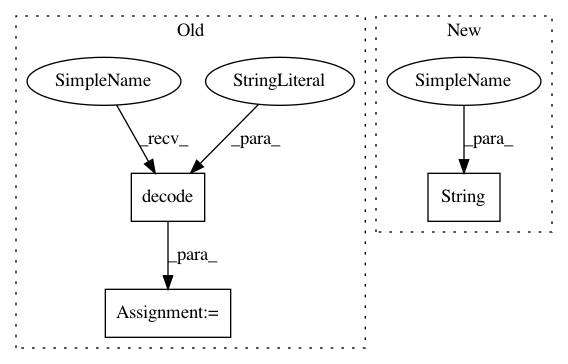

c179e6b604f649dbf65bb2e3ded8afdeee279998,studio/tests/remote_worker_test.py,RemoteWorkerTest,test_baked_image,#RemoteWorkerTest#,176
Before Change
workerout, _ = pw.communicate()
if workerout:
workerout = workerout.decode("utf8")
logger.debug("studio-start-remote-worker output: \n" + workerout)
rmip = subprocess.Popen(["docker", "rmi", image],
stdout=subprocess.PIPE,
After Change
if workerout:
logger.debug(
"studio-start-remote-worker output: \n" +
str(workerout))
rmip = subprocess.Popen(["docker", "rmi", image],
stdout=subprocess.PIPE,
In pattern: SUPERPATTERN
Frequency: 3
Non-data size: 3
Instances
Project Name: studioml/studio
Commit Name: c179e6b604f649dbf65bb2e3ded8afdeee279998
Time: 2017-10-23
Author: peter.zhokhov@sentient.ai
File Name: studio/tests/remote_worker_test.py
Class Name: RemoteWorkerTest
Method Name: test_baked_image
Project Name: studioml/studio
Commit Name: c179e6b604f649dbf65bb2e3ded8afdeee279998
Time: 2017-10-23
Author: peter.zhokhov@sentient.ai
File Name: studio/tests/remote_worker_test.py
Class Name: RemoteWorkerTest
Method Name: test_remote_worker
Project Name: studioml/studio
Commit Name: c179e6b604f649dbf65bb2e3ded8afdeee279998
Time: 2017-10-23
Author: peter.zhokhov@sentient.ai
File Name: studio/tests/remote_worker_test.py
Class Name: RemoteWorkerTest
Method Name: test_remote_worker_c